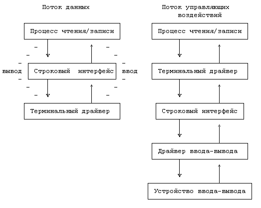
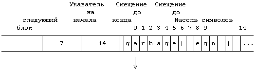
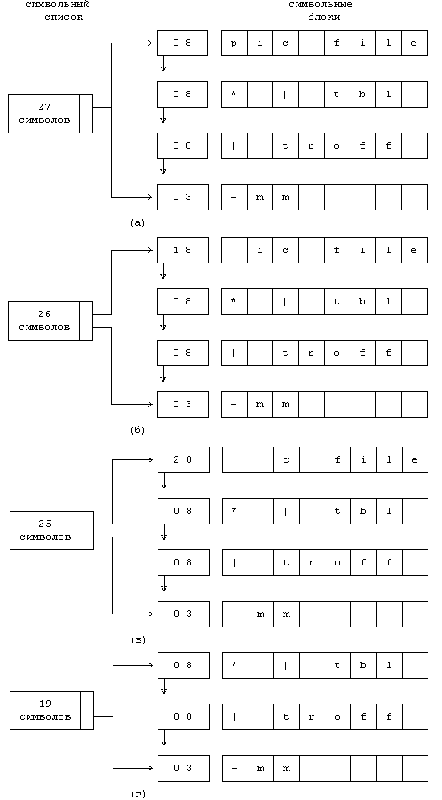
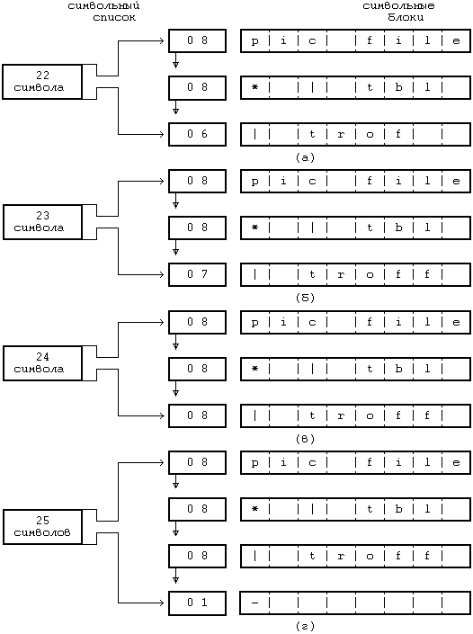

Терминальные драйверы выполняют ту же функцию, что и остальные драйверы: управление передачей данных от и на терминалы. Однако, терминалы имеют одну особенность, связанную с тем, что они обеспечивают интерфейс пользователя с системой. Обеспечивая интерактивное использование системы UNIX, терминальные драйверы имеют свой внутренний интерфейс с модулями, интерпретирующими ввод и вывод строк. В каноническом режиме интерпретаторы строк преобразуют неструктурированные последовательности данных, введенные с клавиатуры, в каноническую форму (то есть в форму, соответствующую тому, что пользователь имел ввиду на самом деле) прежде, чем послать эти данные принимающему процессу; строковый интерфейс также преобразует неструктурированные последовательности выходных данных, созданных процессом, в формат, необходимый пользователю. В режиме без обработки строковый интерфейс передает данные между процессами и терминалом без каких-либо преобразований.
Программисты, например, работают на клавиатуре терминала довольно быстро, но с ошибками. На этот случай терминалы имеют клавишу стирания ("erase"; клавиша может быть обозначена таким образом), чтобы пользователь имел возможность стирать часть введенной строки и вводить коррективы. Терминалы пересылают машине всю введенную последовательность, включая и символы стирания (****). В каноническом режиме строковый интерфейс буферизует информацию в строки (набор символов, заканчивающийся символом возврата каретки (*****)) и процессы стирают символы у себя, прежде чем переслать исправленную последовательность считывающему процессу.
В функции строкового интерфейса входят:
- построчный разбор введенных последовательностей;
- обработка символов стирания;
- обработка символов "удаления", отменяющих все остальные символы, введенные до того в текущей строке;
- отображение символов, полученных терминалом;
- расширение выходных данных, например, преобразование символов табуляции в последовательности пробелов;
- сигнализирование процессам о зависании терминалов и прерывании строк или в ответ на нажатие пользователем клавиши удаления;
- предоставление возможности не обрабатывать специальные символы, такие как символы стирания, удаления и возврата каретки.
Функционирование без обработки подразумевает использование асинхронного терминала, поскольку процессы могут считывать символы в том виде, в каком они были введены, вместо того, чтобы ждать, когда пользователь нажмет клавишу ввода или возврата каретки.
Ричи отметил, что первые строковые интерфейсы, используемые еще при разработке системы в начале 70-х годов, работали в составе программ командного процессора и редактора, но не в ядре (см. [Ritchie 84], стр.1580). Однако, поскольку в их функциях нуждается множество программ, их место в составе ядра. Несмотря на то, что строковый интерфейс выполняет такие функции, из которых логически вытекает его место между терминальным драйвером и остальной частью ядра, ядро не запускает строковый интерфейс иначе, чем через терминальный драйвер. На Рисунке 10.9 показаны поток данных, проходящий через терминальный драйвер и строковый интерфейс, и соответствующие ему управляющие воздействия, проходящие через терминальный драйвер. Пользователи могут указать, какой строковый интерфейс используется посредством вызова системной функции ioctl, но реализовать схему, по которой одно устройство использовало бы несколько строковых интерфейсов одновременно, при чем каждый интерфейсный модуль, в свою очередь, успешно вызывал бы следующий модуль для обработки данных, довольно трудно.
Строковый интерфейс обрабатывает данные в символьных списках. Символьный список (clist) представляет собой переменной длины список символьных блоков с использованием указателей и с подсчетом количества символов в списке. Символьный блок (cblock) содержит указатель на следующий блок в списке, небольшой массив хранимой в символьном виде информации и адреса смещений, показывающие место расположения внутри блока корректной информации (Рисунок 10.10). Смещение до начала показывает первую позицию расположения корректной информации в массиве, смещение до конца показывает первую позицию расположения некорректной информации.

Рисунок 10.9. Последовательность обращений и поток данных через строковый интерфейс

Рисунок 10.10. Символьный блок
Ядро обеспечивает ведение списка свободных символьных блоков и выполняет над символьными списками и символьными блоками шесть операций.
- Ядро назначает драйверу символьный блок из списка свободных символьных блоков.
- Оно также возвращает символьный блок в список свободных символьных блоков.
- Ядро может выбирать первый символ из символьного списка: оно удаляет первый символ из первого символьного блока в списке и устанавливает значения счетчика символов в списке и указателей в блоке таким образом, чтобы последующие операции не выбирали один и тот же символ. Если в результате операции выбран последний символ блока, ядро помещает в список свободных символьных блоков пустой блок и переустанавливает указатели в символьном списке. Если в символьном списке отсутствуют символы, ядро возвращает пустой символ.
- Ядро может поместить символ в конец символьного списка путем поиска последнего символьного блока в списке, включения символа в него и переустановки адресов смещений. Если символьный блок заполнен, ядро выделяет новый символьный блок, включает его в конец символьного списка и помещает символ в новый блок.
- Ядро может удалять от начала списка группу символов по одному блоку за одну операцию, что эквивалентно удалению всех символов в блоке за один раз.
- Ядро может поместить блок с символами в конец символьного списка.
Символьные списки позволяют создать несложный механизм буферизации, полезный при небольшом объеме передаваемых данных, типичном для медленных устройств, таких как терминалы. Они дают возможность манипулировать с данными с каждым символом в отдельности и с группой символьных блоков. Например, Рисунок 10.11 иллюстрирует удаление символов из символьного списка; ядро удаляет по одному символу из первого блока в списке (Рисунок 10.11а-в) до тех пор, пока в блоке не останется ни одного символа (Рисунок 10.11г); затем оно устанавливает указатель списка на следующий блок, который становится первым блоком в списке. Подобно этому на Рисунке 10.12 показано, как ядро включает символы в символьный список; при этом предполагается, что в одном блоке помещается до 8 символов и что ядро размещает новый блок в конце списка (Рисунок 10.12г).

Рисунок 10.11. Удаление символов из символьного списка

Рисунок 10.12. Включение символов в символьный список
Структуры данных, с которыми работают терминальные драйверы, связаны с тремя символьными списками: списком для хранения данных, выводимых на терминал, списком для хранения неструктурированных вводных данных, поступивших в результате выполнения программы обработки прерывания от терминала, вызванного попыткой пользователя ввести данные с клавиатуры, и списком для хранения обработанных входных данных, поступивших в результате преобразования строковым интерфейсом специальных символов (таких как символы стирания и удаления) в неструктурированном списке.
Когда процесс ведет запись на терминал (Рисунок 10.13), терминальный драйвер запускает строковый интерфейс. Строковый интерфейс в цикле считывает символы из адресного пространства процесса и помещает их в символьный список для хранения выводных данных до тех пор, пока поток данных не будет исчерпан. Строковый интерфейс обрабатывает выводимые символы, например, заменяя символы табуляции на последовательности пробелов. Если количество символов в списке для хранения выводных данных превысит верхнюю отметку, строковый интерфейс вызывает процедуры драйвера, пересылающие данные из символьного списка на терминал и после этого приостанавливающие выполнение процесса, ведущего запись. Когда объем информации в списке для хранения выводных данных падает за нижнюю отметку, программа обработки прерываний возобновляет выполнение всех процессов, приостановленных до того момента, когда терминал сможет принять следующую порцию данных. Строковый интерфейс завершает цикл обработки, скопировав всю выводимую информацию из адресного пространства задачи в соответствующий символьный список, и вызывает выполнение процедур драйвера, пересылающих данные на терминал, о которых уже было сказано выше.
алгоритм terminal_write
{
выполнить (пока из пространства задачи еще поступают
данные)
{
если (на терминал поступает информация)
{
приступить к выполнению операции записи данных
из списка, хранящего выводные данные;
приостановиться (до того момента, когда терми-
нал будет готов принять следующую порцию дан-
ных);
продолжить; /* возврат к началу цикла */
}
скопировать данные в объеме символьного блока из
пространства задачи в список, хранящий выводные
данные: строковый интерфейс преобразует символы
табуляции и т.д.;
}
приступить к выполнению операции записи данных из спис-
ка, хранящего выводные данные;
}
|
Рисунок 10.13. Алгоритм переписи данных на терминал
Если на терминал ведут запись несколько процессов, они независимо друг от друга следуют указанной процедуре. Выводимая информация может быть искажена; то есть на терминале данные, записываемые процессами, могут пересекаться. Это может произойти из-за того, что процессы ведут запись на терминал, используя несколько вызовов системной функции write. Ядро может переключать контекст, пока процесс выполняется в режиме задачи, между последовательными вызовами функции write, и вновь запущенные процессы могут вести запись на терминал, пока первый из процессов приостановлен. Выводимые данные могут быть также искажены и на терминале, поскольку процесс может приостановиться на середине выполнения системной функции write, ожидая завершения вывода на терминал из системы предыдущей порции данных. Ядро может запустить другие процессы, которые вели запись на терминал до того, как первый процесс был повторно запущен. По этой причине, ядро не гарантирует, что содержимое буфера данных, выводимое в результате вызова системной функции write, появится на экране терминала в непрерывном виде.
char form[]="это пример вывода строки из порожденного процесса"
main()
{
char output[128];
int i;
for (i = 0; i < 18; i++)
{
switch (fork())
{
case -1: /* ошибка --- превышено максимальное чис-
ло процессов */
exit();
default: /* родительский процесс */
break;
case 0: /* порожденный процесс */
/* формат вывода строки в переменной output */
sprintf(output,"%%d\n%s%d\n",form,i,form,i);
for (;;)
write(1,output,sizeof(output));
}
}
}
|
Рисунок 10.14. Передача данных через стандартный вывод
Рассмотрим программу, приведенную на Рисунке 10.14. Родительский процесс создает до 18 порожденных процессов; каждый из порожденных процессов записывает строку (с помощью библиотечной функции sprintf) в массив output, который включает сообщение и значение счетчика i в момент выполнения функции fork, и затем входит в цикл пошаговой переписи строки в файл стандартного вывода. Если стандартным выводом является терминал, терминальный драйвер регулирует поток поступающих данных. Выводимая строка имеет более 64 символов в длину, то есть слишком велика для того, чтобы поместиться в символьном блоке (длиной 64 байта) в версии V системы. Следовательно, терминальному драйверу требуется более одного символьного блока для каждого вызова функции write, иначе выводной поток может стать искаженным. Например, следующие строки были частью выводного потока, полученного в результате выполнения программы на машине AT&T 3B20:
this is a sample output string from child 1
this is a sample outthis is a sample output string from child 0
Чтение данных с терминала в каноническом режиме более сложная операция. В вызове системной функции read указывается количество байт, которые процесс хочет считать, но строковый интерфейс выполняет чтение по получении символа перевода каретки, даже если количество символов не указано. Это удобно с практической точки зрения, так как процесс не в состоянии предугадать, сколько символов пользователь введет с клавиатуры, и, с другой стороны, не имеет смысла ждать, когда пользователь введет большое число символов. Например, пользователи вводят командные строки для командного процессора shell и ожидают ответа shell'а на команду по получении символа возврата каретки. При этом нет никакой разницы, являются ли введенные строки простыми командами, такими как "date" или "who", или же это более сложные последовательности команд, подобные следующей:
pic file* | tbl | eqn | troff -mm -Taps | apsend
Терминальный драйвер и строковый интерфейс ничего не знают о синтаксисе командного процессора shell, и это правильно, поскольку другие программы, которые считывают информацию с терминалов (например, редакторы), имеют различный синтаксис команд. Поэтому строковый интерфейс выполняет чтение по получении символа возврата каретки.
На Рисунке 10.15 показан алгоритм чтения с терминала. Предположим, что терминал работает в каноническом режиме; в разделе 10.3.3 будет рассмотрена работа в режиме без обработки. Если в настоящий момент в любом из символьных списков для хранения вводной информации отсутствуют данные, процесс, выполняющий чтение, приостанавливается до поступления первой строки данных. Когда данные поступают, программа обработки прерывания от терминала запускает "программу обработки прерывания" строкового интерфейса, которая помещает данные в список для хранения неструктурированных вводных данных для передачи процессам, осуществляющим чтение, и в список для хранения выводных данных, передаваемых в качестве эхосопровождения на терминал. Если введенная строка содержит символ возврата каретки, программа обработки прерывания возобновляет выполнение всех приостановленных процессов чтения. Когда процесс, осуществляющий чтение, выполняется, драйвер выбирает символы из списка для хранения неструктурированных вводных данных, обрабатывает символы стирания и удаления и помещает символы в канонический символьный список. Затем он копирует строку символов в адресное пространство задачи до символа возврата каретки или до исчерпания числа символов, указанного в вызове системной функции read, что встретится раньше. Однако, процесс может обнаружить, что данных, ради которых он возобновил свое выполнение, больше не существует: другие процессы считали данные с терминала и удалили их из списка для неструктурированных вводных данных до того, как первый процесс был запущен вновь. Такая ситуация похожа на ту, которая имеет место, когда из канала считывают данные несколько процессов.
алгоритм terminal_read
{
если (в каноническом символьном списке отсутствуют дан-
ные)
{
выполнить (пока в списке для неструктурированных
вводных данных отсутствует информация)
{
если (терминал открыт с параметром "no delay"
(без задержки))
возвратить управление;
если (терминал в режиме без обработки с использо-
ванием таймера и таймер не активен)
предпринять действия к активизации таймера
(таблица ответных сигналов);
приостановиться (до поступления данных с термина-
ла);
}
/* в списке для неструктурированных вводных данных
есть информация */
если (терминал в режиме без обработки)
скопировать все данные из списка для неструктури-
рованных вводных данных в канонический список;
в противном случае /* терминал в каноническом ре-
жиме */
{
выполнить (пока в списке для неструктурированных
вводных данных есть символы)
{
копировать по одному символу из списка для
неструктурированных вводных данных в кано-
нический список:
выполнить обработку символов стирания и уда-
ления;
если (символ - "возврат каретки" или "конец
файла")
прерваться; /* выход из цикла */
}
}
}
выполнить (пока в каноническом списке еще есть символы
и не исчерпано количество символов, указанное в вызове
функции read)
копировать символы из символьных блоков канонического
списка в адресное пространство задачи;
}
|
Рисунок 10.15. Алгоритм чтения с терминала
Обработка символов в направлении ввода и в направлении вывода асимметрична, что видно из наличия двух символьных списков для ввода и одного - для вывода. Строковый интерфейс выводит данные из пространства задачи, обрабатывает их и помещает их в список для хранения выводных данных. Для симметрии следовало бы иметь только один список для вводных данных. Однако, в таком случае потребовалось бы использование программы обработки прерываний для интерпретации символов стирания и удаления, что сделало бы процедуру более сложной и длительной и запретило бы возникновение других прерываний на все критическое время. Использование двух символьных списков для ввода подразумевает, что программа обработки прерываний может просто сбросить символы в список для неструктурированных вводных данных и возобновить выполнение процесса, осуществляющего чтение, который собственно и возьмет на себя работу по интерпретации вводных данных. При этом программа обработки прерываний немедленно помещает введенные символы в список для хранения выводных данных, так что пользователь испытывает лишь минимальную задержку при просмотре введенных символов на терминале.
char input[256];
main()
{
register int i;
for (i = 0; i < 18; i++)
{
switch (fork())
{
case -1: /* ошибка */
printf("операция fork не выполнена из-за ошибки\n");
exit();
default: /* родительский процесс */
break;
case 0: /* порожденный процесс */
for (;;)
{
read(0,input,256); /* чтение строки */
printf("%d чтение %s\n",i,input);
}
}
}
}
|
Рисунок 10.16. Конкуренция за данные, вводимые с терминала
На Рисунке 10.16 приведена программа, в которой родительский процесс порождает несколько процессов, осуществляющих чтение из файла стандартного ввода, конкурируя за получение данных, вводимых с терминала. Ввод с терминала обычно осуществляется слишком медленно для того, чтобы удовлетворить все процессы, ведущие чтение, поэтому процессы большую часть времени находятся в приостановленном состоянии в соответствии с алгоритмом terminal_read, ожидая ввода данных. Когда пользователь вводит строку данных, программа обработки прерываний от терминала возобновляет выполнение всех процессов, ведущих чтение; поскольку они были приостановлены с одним и тем же уровнем приоритета, они выбираются для запуска с одинаковым уровнем приоритета. Пользователь не в состоянии предугадать, какой из процессов выполняется и считывает строку данных; успешно созданный процесс печатает значение переменной i в момент его создания. Все другие процессы в конце концов будут запущены, но вполне возможно, что они не обнаружат введенной информации в списках для хранения вводных данных и их выполнение снова будет приостановлено. Вся процедура повторяется для каждой введенной строки; нельзя дать гарантию, что ни один из процессов не захватит все введенные данные.
Одновременному чтению с терминала несколькими процессами присуща неоднозначность, но ядро справляется с ситуацией наилучшим образом. С другой стороны, ядро обязано позволять процессам одновременно считывать данные с терминала, иначе порожденные командным процессором shell процессы, читающие из стандартного ввода, никогда не будут работать, поскольку shell тоже обращается к стандартному вводу. Короче говоря, процессы должны синхронизировать свои обращения к терминалу на пользовательском уровне.
Когда пользователь вводит символ "конец файла" (Ctrl-d в ASCII), строковый интерфейс передает функции read введенную строку до символа конца файла, но не включая его. Он не передает данные (код возврата 0) функции read, если в символьном списке встретился только символ "конец файла"; вызывающий процесс сам распознает, что обнаружен конец файла и больше не следует считывать данные с терминала. Если еще раз обратиться к примерам программ по shell'у, приведенным в главе 7, можно отметить, что цикл работы shell'а завершается, когда пользователь нажимает <Ctrl-d>: функция read возвращает 0 и производится выход из shell'а.
В этом разделе рассмотрена работа терминалов ввода-вывода, которые передают данные на машину по одному символу за одну операцию, в точности как пользователь их вводит с клавиатуры. Интеллектуальные терминалы подготавливают свой вводной поток на внешнем устройстве, освобождая центральный процессор для другой работы. Структура драйверов для таких терминалов походит на структуру драйверов для терминалов ввода-вывода, несмотря на то, что функции строкового интерфейса различаются в зависимости от возможностей внешних устройств.
Пользователи устанавливают параметры терминала, такие как символы стирания и удаления, и извлекают значения текущих установок с помощью системной функции ioctl. Сходным образом они устанавливают необходимость эхо-сопровождения ввода данных с терминала, задают скорость передачи информации в бодах, заполняют очереди символов ввода и вывода или вручную запускают и останавливают выводной поток символов. В информационной структуре терминального драйвера хранятся различные управляющие установки (см. [SVID 85], стр.281), и строковый интерфейс получает параметры функции ioctl и устанавливает или считывает значения соответствующих полей структуры данных. Когда процесс устанавливает значения параметров терминала, он делает это для всех процессов, использующих терминал. Установки терминала не сбрасываются автоматически при выходе из процесса, сделавшего изменения в установках.
Процессы могут также перевести терминал в режим без обработки символов, в котором строковый интерфейс передает символы в точном соответствии с тем, как пользователь ввел их: обработка вводного потока полностью отсутствует. Однако, ядро должно знать, когда выполнить вызванную пользователем системную функцию read, поскольку символ возврата каретки трактуется как обычный введенный символ. Оно выполняет функцию read после того, как с терминала будет введено минимальное число символов или по прохождении фиксированного промежутка времени от момента получения с терминала любого набора символов. В последнем случае ядро хронометрирует ввод символов с терминала, помещая записи в таблицу ответных сигналов (глава 8). Оба критерия (минимальное число символов и фиксированный промежуток времени) задаются в вызове функции ioctl. Когда соответствующие критерии удовлетворены, программа обработки прерываний строкового интерфейса возобновляет выполнение всех приостановленных процессов. Драйвер пересылает все символы из списка для хранения неструктурированных вводных данных в канонический список и выполняет запрос процесса на чтение, следуя тому же самому алгоритму, что и в случае работы в каноническом режиме. Режим без обработки символов особенно важен в экранно-ориентированных приложениях, таких как экранный редактор vi, многие из команд которого не заканчиваются символом возврата каретки. Например, команда dw удаляет слово в текущей позиции курсора.
На Рисунке 10.17 приведена программа, использующая функцию ioctl для сохранения текущих установок терминала для файла с дескриптором 0, что соответствует значению дескриптора файла стандартного ввода. Функция ioctl с командой TCGETA приказывает драйверу извлечь установки и сохранить их в структуре с именем savetty в адресном пространстве задачи. Эта команда часто используется для того, чтобы определить, является ли файл терминалом или нет, поскольку она ничего не изменяет в системе: если она завершается неудачно, процессы предполагают, что файл не является терминалом. Здесь же, процесс вторично вызывает функцию ioctl для того, чтобы перевести терминал в режим без обработки: он отключает эхо-сопровождение ввода символов и готовится к выполнению операций чтения с терминала по получении с терминала 5 символов, как минимум, или по прохождении 10 секунд с момента ввода первой порции символов. Когда процесс получает сигнал о прерывании, он сбрасывает первоначальные параметры терминала и завершается.
#include <signal.h>
#include <termio.h>
struct termio savetty;
main()
{
extern sigcatch();
struct termio newtty;
int nrd;
char buf[32];
signal(SIGINT,sigcatch);
if (ioctl(0,TCGETA,&savetty) == -1)
{
printf("ioctl завершилась неудачно: нет терминала\n");
exit();
}
newtty = savetty;
newtty.c_lflag &= ~ICANON;/* выход из канонического режима */
newtty.c_lflag &= ~ECHO; /* отключение эхо-сопровождения*/
newtty.c_cc[VMIN] = 5; /* минимум 5 символов */
newtty.c_cc[VTIME] = 100; /* интервал 10 секунд */
if (ioctl(0,TCSETAF,&newtty) == -1)
{
printf("не могу перевести тер-л в режим без обработки\n");
exit();
}
for(;;)
{
nrd = read(0,buf,sizeof(buf));
buf[nrd] = 0;
printf("чтение %d символов '%s'\n",nrd,buf);
}
}
sigcatch()
{
ioctl(0,TCSETAF,&savetty);
exit();
}
|
Рисунок 10.17. Режим без обработки - чтение 5-символьных блоков
#include <fcntl.h>
main()
{
register int i,n;
int fd;
char buf[256];
/* открытие терминала только для чтения с опцией "no delay" */
if((fd = open("/dev/tty",O_RDONLYO_NDELAY)) == -1)
exit();
n = 1;
for(;;) /* всегда */
{
for(i = 0; i < n; i++)
;
if(read(fd,buf,sizeof(buf)) > 0)
{
printf("чтение с номера %d\n",n);
n--;
}
else
/* ничего не прочитано; возврат вследствие "no delay" */
n++;
}
}
|
Рисунок 10.18. Опрос терминала
Иногда удобно производить опрос устройства, то есть считывать с него данные, если они есть, или продолжать выполнять обычную работу - в противном случае. Программа на Рисунке 10.18 иллюстрирует этот случай: после открытия терминала с параметром "no delay" (без задержки) процессы, ведущие чтение с него, не приостановят свое выполнение в случае отсутствия данных, а вернут управление немедленно (см. алгоритм terminal_read, Рисунок 10.15). Этот метод работает также, если процесс следит за множеством устройств: он может открыть каждое устройство с параметром "no delay" и опросить всех из них, ожидая поступления информации с каждого. Однако, этот метод растрачивает вычислительные мощности системы.
В системе BSD есть системная функция select, позволяющая производить опрос устройства. Синтаксис вызова этой функции:
select(nfds,rfds,wfds,efds,timeout)
где nfds - количество выбираемых дескрипторов файлов, а rfds, wfds и efds указывают на двоичные маски, которыми "выбирают" дескрипторы открытых файлов. То есть, бит 1 << fd (сдвиг на 1 разряд влево значения дескриптора файла) соответствует установке на тот случай, если пользователю нужно выбрать этот дескриптор файла. Параметр timeout (тайм-аут) указывает, на какое время следует приостановить выполнение функции select, ожидая поступления данных, например; если данные поступают для любых дескрипторов и тайм-аут не закончился, select возвращает управление, указывая в двоичных масках, какие дескрипторы были выбраны. Например, если пользователь пожелал приостановиться до момента получения данных по дескрипторам 0, 1 или 2, параметр rfds укажет на двоичную маску 7; когда select возвратит управление, двоичная маска будет заменена маской, указывающей, по каким из дескрипторов имеются готовые данные. Двоичная маска wfds выполняет похожую функцию в отношении записи дескрипторов, а двоичная маска efds указывает на существование исключительных условий, связанных с конкретными дескрипторами, что бывает полезно при работе в сети.
Операторский терминал - это терминал, с которого пользователь регистрируется в системе, он управляет процессами, запущенными пользователем с терминала. Когда процесс открывает терминал, драйвер терминала открывает строковый интерфейс. Если процесс возглавляет группу процессов как результат выполнения системной функции setpgrp и если процесс не связан с одним из операторских терминалов, строковый интерфейс делает открываемый терминал операторским. Он сохраняет старший и младший номера устройства для файла терминала в адресном пространстве, выделенном процессу, а номер группы процессов, связанной с открываемым процессом, в структуре данных терминального драйвера. Открываемый процесс становится управляющим процессом, обычно входным (начальным) командным процессором, что мы увидим далее.
Операторский терминал играет важную роль в обработке сигналов. Когда пользователь нажимает клавиши "delete" (удаления), "break" (прерывания), стирания или выхода, программа обработки прерываний загружает строковый интерфейс, который посылает соответствующий сигнал всем процессам в группе. Подобно этому, когда пользователь "зависает", программа обработки прерываний от терминала получает информацию о "зависании" от аппаратуры, и строковый интерфейс посылает соответствующий сигнал всем процессам в группе. Таким образом, все процессы, запущенные с конкретного терминала, получают сигнал о "зависании"; реакцией по умолчанию для большинства процессов будет выход из программы по получении сигнала; это похоже на то, как при завершении работы пользователя с терминалом из системы удаляются побочные процессы. После посылки сигнала о "зависании" программа обработки прерываний от терминала разъединяет терминал с группой процессов, чтобы процессы из этой группы не могли больше получать сигналы, возникающие на терминале.
Зачастую процессам необходимо прочитать ил записать данные непосредственно на операторский терминал, хотя стандартный ввод и вывод могут быть переназначены в другие файлы. Например, shell может посылать срочные сообщения непосредственно на терминал, несмотря на то, что его стандартный файл вывода и стандартный файл ошибок, возможно, переназначены в другое место. В версиях системы UNIX поддерживается "косвенный" доступ к терминалу через файл устройства "/dev/tty", в котором для каждого процесса определен управляющий (операторский) терминал. Пользователи, прошедшие регистрацию на отдельных терминалах, могут обращаться к файлу "/dev/tty", но они получат доступ к разным терминалам.
Существует два основных способа поиска ядром операторского терминала по имени файла "/dev/tty". Во-первых, ядро может специально указать номер устройства для файла косвенного терминала с отдельной точкой входа в таблицу ключей устройств посимвольного ввода-вывода. При запуске косвенного терминала драйвер этого терминала получает старший и младший номера операторского терминала из адресного пространства, выделенного процессу, и запускает драйвер реального терминала, используя данные таблицы ключей устройств посимвольного ввода-вывода. Второй способ, обычно используемый для поиска операторского терминала по имени "/dev/tty", связан с проверкой соответствия старшего номера устройства номеру косвенного терминала перед вызовом процедуры open, определяемой типом данного драйвера. В случае совпадения номеров освобождается индекс файла "/dev/tty", выделяется индекс операторскому терминалу, точка входа в таблицу файлов переустанавливается так, чтобы указывать на индекс операторского терминала, и вызывается процедура open, принадлежащая терминальному драйверу. Дескриптор файла, возвращенный после открытия файла "/dev/tty", указывает непосредственно на операторский терминал и его драйвер.
Как показано в главе 7, процесс начальной загрузки, имеющий номер 1, выполняет бесконечный цикл чтения из файла "/etc/inittab" инструкций о том, что нужно делать, если загружаемая система определена как "однопользовательская" или "многопользовательская". В многопользовательском режиме самой первой обязанностью процесса начальной загрузки является предоставление пользователям возможности регистрироваться в системе с терминалов (Рисунок 10.19). Он порождает процессы, именуемые getty-процессами (от "get tty" - получить терминал), и следит за тем, какой из процессов открывает какой терминал; каждый getty-процесс устанавливает свою группу процессов, используя вызов системной функции setpgrp, открывает отдельную терминальную линию и обычно приостанавливается во время выполнения функции open до тех пор, пока машина не получит аппаратную связь с терминалом. Когда функция open возвращает управление, getty-процесс исполняет программу login (регистрации в системе), которая требует от пользователей, чтобы они идентифицировали себя указанием регистрационного имени и пароля. Если пользователь зарегистрировался успешно, программа login наконец запускает командный процессор shell и пользователь приступает к работе. Этот вызов shell'а именуется "login shell" (регистрационный shell, регистрационный интерпретатор команд). Процесс, связанный с shell'ом, имеет тот же идентификатор, что и начальный getty-процесс, поэтому login shell является процессом, возглавляющим группу процессов. Если пользователь не смог успешно зарегистрироваться, программа регистрации завершается через определенный промежуток времени, закрывая открытую терминальную линию, а процесс начальной загрузки порождает для этой линии следующий getty-процесс. Процесс начальной загрузки делает паузу до получения сигнала об окончании порожденного ранее процесса. После возобновления работы он выясняет, был ли прекративший существование процесс регистрационным shell'ом и если это так, порождает еще один getty-процесс, открывающий терминал, вместо прекратившего существование.
алгоритм login /* процедура регистрации */
{
исполняется getty-процесс:
установить группу процессов (вызов функции setpgrp);
открыть терминальную линию; /* приостанов до завершения
открытия */
если (открытие завершилось успешно)
{
исполнить программу регистрации:
запросить имя пользователя;
отключить эхо-сопровождение, запросить пароль;
если (регистрация прошла успешно)
/* найден соответствующий пароль в /etc/passwd */
{
перевести терминал в канонический режим (ioctl);
исполнить shell;
}
в противном случае
считать количество попыток регистрации, пытаться
зарегистрироваться снова до достижения опреде-
ленной точки;
}
}
|
Рисунок 10.19. Алгоритм регистрации
(****) В этом разделе рассматривается использование терминалов ввода-вывода, которые передают все символы, введенные пользователем, без обработки.
(*****) В данной главе используется общий термин "возврат каретки" для обозначения символов возврата каретки и перевода строки.
Предыдущая глава || Оглавление || Следующая глава